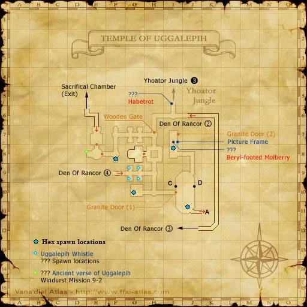

Level 75 reference · Zenith rules
|
Job: Summoner Notorious Monster |
|
| Zone | Level | Drops | Steal | Spawns |
Notes |
|---|---|---|---|---|---|
|
65 |
1 |
A, L, S | |||
|
HP = Detects Low HP; M = Detects Magic; Sc = Follows by Scent; T(S) = True-sight; T(H) = True-hearing JA = Detects job abilities; WS = Detects weaponskills; Z(D) = Asleep in Daytime; Z(N) = Asleep at Nighttime | |||||


Image source
Notes:
- This NM is often referred to as "Tonberry King" by players, but its actual name is "Tonberry Kinq".
- Lottery Spawn from the Tonberry Dismayers at (E-7) of the second map.
- Has around 3,500 HP
- Uses Astral Flow.
- Killable by a party of 6 characters, level 65 or higher.
- Drops around 15,000 gil

Adapted from Eden Wiki: Tonberry Kinq · Contributors and history · CC BY-SA 4.0. Revision 1744. Layout, links and optional background text adapted for Zenith.